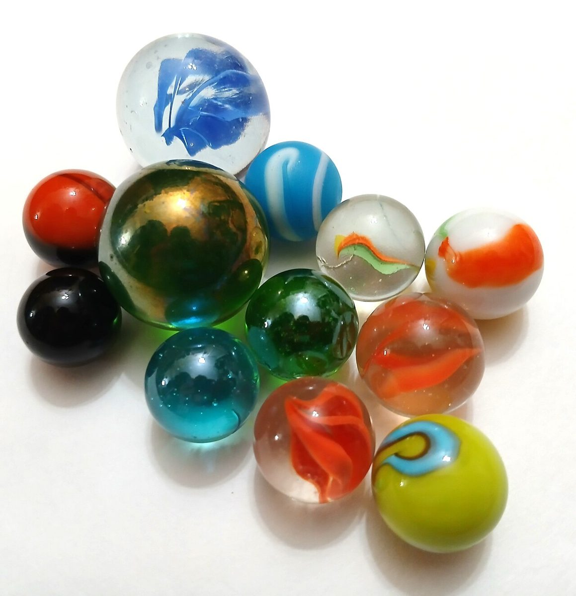
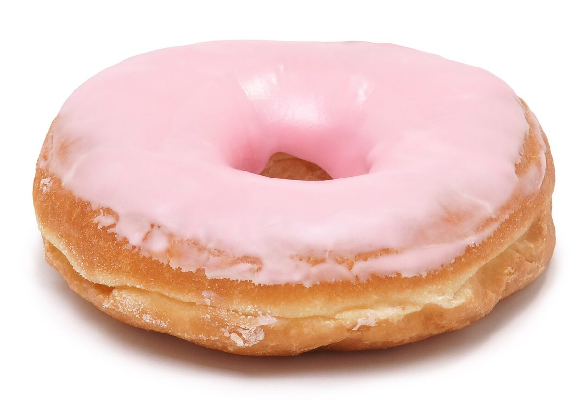

店のこと
店のこと
お店について確認できているのは、所在地・電話番号・Instagramのアカウントです。
このページの「点描の話」は、制作側が連想して書いたものです。お店の実際の様子・考え・メニューとは関係がありません。
確認できていること
- 店名は「CHONNE」、業種はベーカリー(ドーナツ)
- 所在地は滋賀県近江八幡市鷹飼町1490(〒523-0891)
- 電話番号は050-8880-7668
- Instagramのアカウントは @chonne_donut
- 営業時間・定休日・メニュー・価格・ご予約・駐車場は準備中

点描の話
「ちょん」から連想したこと
由来は分かりません。制作側は、ペン先を紙にちょんと当てる、あの小さな点を思い浮かべました。点がひとつ、ふたつと増えていくと、やがて絵になる。そんな点描画のように、このサイトも1ページごとに点を足しています(店名との関係は分かりません)。

